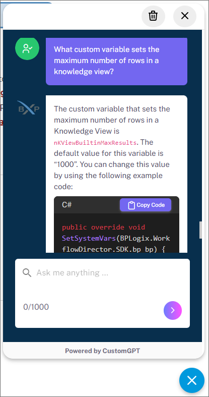
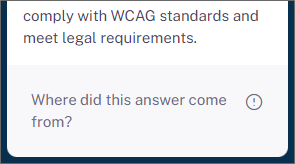
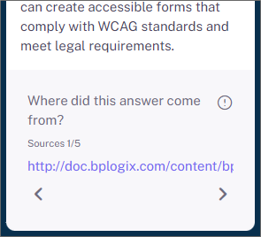

OpenAI, an AI research company, has a conversational AI model known as ChatGPT. This AI model can provide answer to conversational queries when properly trained. An additional service, CustomGPT, enables you to train ChatGPT on a specific set of documents, web pages, or other information, and uses ChatGPT to provide responses based on this custom set of documents.
At BP Logix, we've added the CustomGPT service to the Documentation web site. We hope this new service makes it easier to find answers to Process Director questions without having to perform a document search that might return many unwanted results, because traditional word searches can't understand the context of the term you're using to search.
Unlike a search feature, which returns topics that contain a specific word or set of words, the chatbot is a conversational system, and expects conversational queries, as if you were chatting with a person, instead of a search engine. If you enter a generic search term like, "email attachment" or "dropdown" the chatbot won't be able to respond effectively. Just as the search feature might return many topics that contain the word "dropdown", the chatbot will not be able to determine exactly what you're asking, and while it will probably provide some response, it probably won't be the correct one. There are simply too many sources that use the term for the chatbot to understand what you're asking.
For CustomGPT to work best, however, your query should be as specific as possible. For example: How do I configure a report Datasource? doesn't provide quite enough detail for CustomGPT to know whether you want to know about the Data Sources tab of a Report definition, or about the Datasource object in general, and may return a different answer than you want. Comparatively, How do I configure the Data Sources tab of a report? provides better detail about the specifics you're looking for in the answer, and thus a more detailed and relevant response.
On the other hand, a query like, What custom variable sets the default database timeout? or Can you give me a code sample for nDBCommandTimeout? will generally return the correct answer, or in the case of the latter query, the code sample in the documentation.
The chatbot does track the conversation thread, so, once you've asked a question, you can also reference the URL of a specific documentation topic, or tell the chatbot you'd like information from a training webinar, during the conversation to receive a more specific answer from a more specific source topic. The chatbot also learns over time, so having a conversation often helps nail down the information you're looking for in a way that the initial query might not. It's not nearly as fast as entering a simple search query, but it does improve the quality of the final result.
Finally, the chatbot's answer for questions it can't understand is a canned response. Generally, the answer is phrased like:
"The context does not provide any information about X."
That isn't necessarily true. It doesn't mean the information isn't there. Actually, it may also mean that, but generally it means that the chatbot can't answer your query based on the information it was given in the query. It doesn't understand the context. This phrasing is imprecise, but it is, as mentioned previously, a standard, boilerplate response.
CustomGPT is accessed via a small icon that appears at the bottom right corner of every page.
Clicking this icon opens a chatbot where you can enter your queries and receive a response, such as the one shown in the example below.

The CustomGPT service has trained ChatGPT on:
You can ask a question about any topic that exists in the documentation or training webinars and, hopefully, receive a relevant and helpful response.
CustomGPT has been trained only on thethe topics listed above, so questions that fall outside that scope can't be correctly answered. If you ask a question that's not covered in the documentation, CustomGPT will respond with a message that tells you it cannot provide an answer in the given context—the "context" being the information on the Documentation web site.
Once CustomGPT has answered your query, the bottom of the answer will contain a section labeled, Where did this answer come from?

If you click this section, it will expand to display links to the documentation topics or videos that were used to construct the answer the chatbot provided, and the number of source topics that were used to provide the response.

Left and Right Arrow icons will, if more than one topic was used, enable you to navigate to each topic used to provide the response. Clicking on the link for each topic will open the topic in a new browser tab, so that you can read the source topic for the answer.